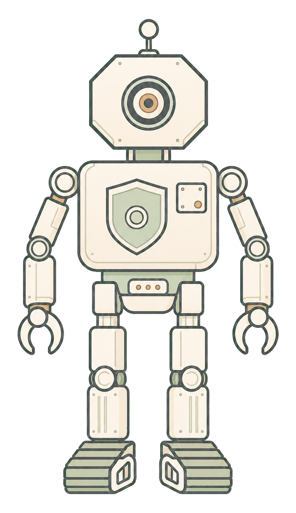

Work can suspend at a seam and resume in a later block.
For AI Agents
The Runtime Platform forPersistent AI Agents
AI agents stop being simple calls once they enter production. They wait for APIs and people, coordinate with other agents, carry scoped authority, and need a record of what happened. ALUX gives that work a decentralized service runtime.
The capability runtime for production AI agents.
A process uses only references it created or was explicitly passed.
Produce and consume operations let concurrent processes wait and match.
EVM sandboxes reach shared resources through adapter contracts.
RISC Agent Machine
Agents Need MoreThan a Brain
Production-grade agents need a body, a brain, an immune system, and a social layer. Intelligence is only one part of the machine; the runtime must keep work alive, contain risk, and connect work across organizations.
Production-grade agents must be RISC. ALUX builds the machine.
RISC specification
Robust / Body
cross-block · durability · replay · reproducibility
Cross-block context preservation and deterministic replay keep long-running work reproducible as it resumes.
Intelligent / Brain
LLM loop · memory · tools · orchestration
Reasoning loops, memory, tool use, and task orchestration are where most agent frameworks compete today.
Secure / Immune System
object capability · policy · rollback · audit
Object capabilities, lifecycle constraints, rollback paths, and replay evidence limit which effects a process can attempt and make committed outcomes easier to examine.
Connected / Social
cross-company delegation · neutral ground · session types
Designed session-type protocols give agents from different organizations a path to work together without remaining in private silos.

How Agent Work Lives on ALUX
An agent workflow does not need to collapse into one bounded call. It can enter with capability scope, branch into concurrent work, suspend at external waits, resume in a later block, and leave an accountable record.
Scoped Intent
Scoped request enters the runtime
Concurrent Work
Tasks fan out and coordinate
Wait for the World
Execution pauses for the world
Cross-Block Resume
Later blocks continue the work
Accountable Record
The trail remains public
01
Scoped intent enters
Work starts with a request, delegated capability, or user intent. The runtime begins with explicit scope and context.
- Capabilities are passed, never forged
- Scope defines purpose and boundaries
02
Concurrent branches
Subtasks fan out across agents and services instead of squeezing through one linear path.
- Tuple space enables async coordination
- Concurrency fits multi-step agent work
03
External wait
Execution can pause for APIs, people, timers, payments, or other real-world events.
- Waiting suspends cleanly
- Wait state stays in the runtime
04
Cross-block resume
When the world responds, the workflow continues in a later block with state, memory, and permissions intact.
- Continuity survives long tasks
- Execution history stays intact
05
Durable record
Recorded COMM choices and committed state transitions remain reproducible to validators and available to higher-level audit systems.
- Validators reproduce the same recorded execution outcome
- A foundation for governance and trust layers
ALUX gives agent work a full lifecycle: scoped entry, concurrent execution, external waiting, cross-block continuation, and durable record.
Three Layers of Agent Infrastructure
Once agent work can actually stay alive, ALUX gives it three platform layers: permissions, coordination, and accountability.
RightsCollaborationAccountability
ALUX
Agent Service Runtime
A runtime where agents wait, collaborate, carry rights, and remain accountable.
Rights
Capability Rights Infrastructure
Authority is carried by unforgeable channel references: what a process may access, invoke, pass onward, or attenuate.
- OCAP-native capability control
- Delegation and attenuation
- A foundation for scoped tool access
Collaboration
Agent Coordination Infrastructure
Agent work is collaborative. ALUX supports multi-agent concurrency, async coordination, and workflows that continue across time.
- Tuple space messaging for async coordination
- Cross-block wait and resume
- Composable services and shared tasks
Accountability
Reproducible Execution Evidence
ReplayTrie records non-deterministic COMM choices for bit-exact deterministic replay inside the ALUX runtime; committed state transitions provide a foundation for higher-level audit and governance.
- Validator-reproducible execution outcomes
- Committed capability and state transitions
- A foundation for governance and safety layers
ALUX is not just AI on-chain. It is infrastructure for agent permissions, coordination, and traceable accountability.
Inside the ALUX Runtime
ALUX brings persistent execution, concurrent coordination, explicit authority, and EVM compatibility together in one runtime layer.
Four core mechanisms make long-running agent work native to the platform.
01
Cross-Block Continuity
A transaction can suspend at a seam and resume in a later block when its dependencies resolve.
02
OCAP-Native Authority
A process can use only references it created or was explicitly passed; arbitrary authority cannot be forged by an opcode.
03
Tuple-Space Coordination
Processes communicate through produce and consume channels. Unmatched work waits; non-deterministic matches are recorded for replay.
04
EVM Through TSAC
EVM sandboxes keep sequential execution while SLOAD, SSTORE, and CALL reach shared resources through Tuple-space Adapter Contracts.
Together, they keep continuity, coordination, and authority inside the runtime instead of rebuilding them in application code.